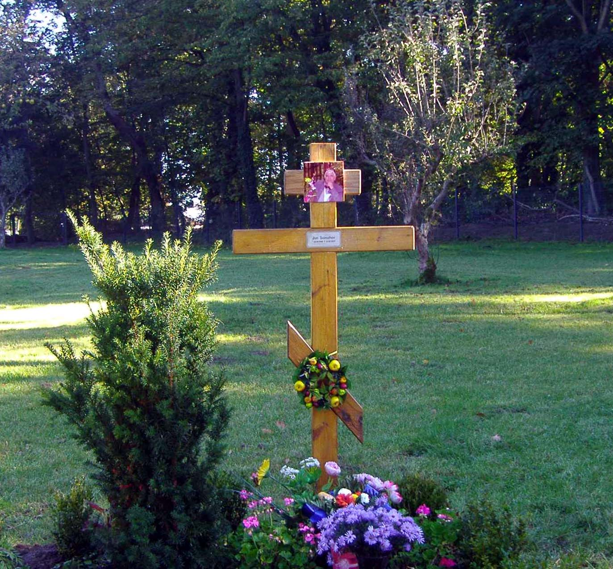

|
Юрий Михайлович Свирежев
Биография
Юрий Михайлович Свирежев родился 22 сентября 1938 г. в селе
Булатниково Муромского района Владимирской области. Его отец, Михаил
Васильевич, был хирургом, мать, Евдокия Васильевна - школьным учителем. В
1955 г. окончил в г. Владимире среднюю школу и в том же году
поступил в Московский физико-технический институт на аэромеханический
факультет. В 1961 г. закончив МФТИ, получил квалификацию
инженера-физика по специальности "аэродинамика" и поступил в аспирантуру
МФТИ с Вычислительным центром АН СССР в качестве базового института
(фактически ВЦ уже в те годы превратился в крупный НИИ по прикладной
математике).
 Юра Свирежев
Юра Свирежев
(верхний ряд, 4-й слева)
студенческие годы | По окончании
аспирантуры в 1964 г. защитил кандидатскую диссертацию под
руководством Н.Н. Моисеева, в последствии академика АН СССР. В начале
60-х годов Юрий Михайлович знакомится с А.А. Ляпуновым и
Н.В. Тимофеевым-Ресовским. Под влиянием этих ученых в область его
научных интересов попали такие биологические науки, как экология и
генетика. После аспирантуры он начал работать в Институте медицинской
радиологии АМН СССР (г. Обнинск) в должности младшего научного
сотрудника Отдела общей радиобиологии и генетики, который возглавлял
Н.В. Тимофеев-Ресовский. Под руководством этого маститого ученого
Юрий Михайлович попытался перевести на математический язык теорию
микроэволюции. С 1965 по 1967 гг. Юрий Михайлович продолжил
разработку математических моделей в генетике, возглавляя отдел
математического моделирования Донецкого ВЦ АН УССР. В это же время он был
по совместительству доцентом Донецкого Государственного университета. За
серию работ по популяционной генетике этого периода Ю.М. Свирежев получил
в 1967 г. премию немецкой Академии естествоиспытателей "Леопольдина". Эти
работы составили основу его докторской диссертации "Математические модели
популяционной генетики", которая была защищена в 1972 г.
 Ю.М. Свирежев,70-е годы
Ю.М. Свирежев,70-е годы | В
1967 г. он вновь возвращается в г. Обнинск в связи с избранием
по конкурсу на должность старшего научного сотрудника Лаборатории
экспериментальной радиационной генетики в Институте медицинской радиологии
АМН СССР. С 1970 г. Ю.М. Свирежев работал в Институте
медико-биологических проблем Минздрава СССР (г. Москва), которым
руководил академик АН СССР О.Г. Газенко. Сначала Юрий Михайлович
был в должности старшего научного сотрудника, а затем, в 1973 г., он
возглавил ВЦ этого Института, участвуя в исследованиях по космической
биологии и медицине (проблемы невесомости, прогнозирование состояния
человека в полете, информационное обеспечение экспериментов и т.п). В то
же время он не прекращал работ в той области, которую сейчас можно назвать
"математической экологией". В 1976 г.по инициативе Н.Н. Моисеева в ВЦ
АН СССР создается Лаборатория математической экологии - первое в стране
научное подразделение с подобным названием, - и Юрий Михайлович стал
первым руководителем Лаборатории, которую возглавлял почти 25 лет. В
середине 70-х годов, когда были опубликованы первые работы Римского клуба,
Ю.М. Свирежевым был предложен принципиально новый подход к
моделированию глобальных процессов, основанный на биосферной концепции
русской классической школы.
 Ю.М. Свирежев на совещании в NASA (США) в составе первой
советско-американской комиссии, 1972 г.
Ю.М. Свирежев на совещании в NASA (США) в составе первой
советско-американской комиссии, 1972 г.
| В 80-е годы в Лаборатории, возглавляемой
Ю.М. Свирежевым, начались работы связанные с медицинской тематикой
(экологией человека) и в 1986 г. Лаборатория была преобразована в Отдел
математического моделирования в экологии и медицине. С 1971 г. Ю.М.
Свирежев стал работать по совместительству на кафедре общих проблем
управления механико-математического факультета МГУ, где он ввел
специализацию по математической экологии и генетике. В 1978 г. ему
было присвоено ученое звание профессора. В октябре 1989 г. часть
сотрудников Отдела Ю.М. Свирежева во главе с ним перешла в Институт
физики атмосферы АН СССР, образовав в этом институте Лабораторию
математической экологии. В эти годы сотрудники Лаборатории принимали
активное участие в исследованиях по Государственным научно-техническим
программам "Экологическая безопасность России", "Экология России",
"Глобальные изменения природной среды и климата". В
1989 - 1991 гг. по приглашению Венгерской Академии Наук
Юрий Михайлович работал в г. Будапеште директором международной
группы по экологическому моделированию. Ученые этой группы на основе
предложенного Ю.М. Свирежевым метода "эколого-энергетического анализа"
исследовали макроструктуру сельского хозяйства Венгрии и разработали
концепцию "адаптивного сельского хозяйства". В 1991 г. профессор
Ю.М. Свирежев был награжден медалью Иштвана Сечени Венгерской
Академии Наук.
 Ю.М. Свирежев (верхний ряд, 4-й слева) среди участников
совещания SCOPE,
Ю.М. Свирежев (верхний ряд, 4-й слева) среди участников
совещания SCOPE,
Калифорния (США), март 1979
| В 1992 г. Ю.М. Свирежев был
приглашен возглавить Отдел системного анализа в Институте изучения
последствий изменения климата (Потсдам, Германия). В 1993 г.
Ю.М. Свирежев был награжден медалью имени Тимофеева-Ресовского
Российской Академии Наук. В конце 90-х годов и начале XXI века
Ю.М. Свирежевым проведены разнообразные исследования механизмов
взаимодействия наземной растительности и климатической системы Земли,
обоснована возможность термодинамического подхода к изучению экосистем. В
1996 г. за заслуги в области математики и биологии Юрий Михайлович
был награжден медалью "Интернациональный человек года 1995-1996"
Университета Кембриджа. Американский географический институт включил
Ю.М. Свирежева за выдающиеся достижения в области науки в число "500
Лидеров Влияния XX века". До 2004 г. Ю.М. Свирежев продолжал
руководить отделом в Потсдамском институте. После выхода на пенсию он
оставался Почетным Научным Сотрудником этого Института до последнего
своего дня.
Юрий Михайлович Свирежев вел большую
научно-организационную работу. С 1973 по 1983 гг. он был экспертом
ВАК. С 1973 г. возглавлял Комиссию по применению математики в
биологии Московского общества испытателей природы. Он был председателем
математической секции Научного совета АН СССР по проблемы биогеоценологии
и охраны природы, заместителем председателя Рабочей группы Советского
комитета МАБ по системному анализу, заместителем председателя Комиссии по
математическим методам в защите растений ВАСХНИЛ. Ю.М. Свирежев
входил в состав Научного совета АН СССР по кибернетике и Научного совета
по медицинской и биологической кибернетике АМН СССР, был членом
редколлегии Журнала общей биологии. По линии общества "Знание"
Ю.М. Свирежев вел большую работу по пропаганде научных достижений.
 Ю.М. Свирежев и Д.О. Логофет на совещании SCOPE/UNEP,
Ю.М. Свирежев и Д.О. Логофет на совещании SCOPE/UNEP,
Таиланд, апрель 1983 | Он выступал с
лекциями в Центральном лектории общества "Знание", участвовал в сборниках
"Число и мысль". Эта его работа была отмечена дипломом первой степени на
Всесоюзном конкурсе "На лучшие произведения научно-популярной литературы"
в 1978 г. В 1985-86 гг. Ю.М. Свирежев как председатель
рабочей группы Временной научно-технической экспертной комиссии АН CCCP во
анализу проектов Минводхоза СССР провел большую организационную и
исследовательскую работу по вскрытию математической несостоятельности
технико-экономического обоснования проектов переброски части стока
северных рек на юг и был активным участником движения научной
общественности против осуществления проектов переброски.
В
Советском Союзе (а затем в России) Ю.М. Свирежев вел большую
педагогическую работу. С начала 70-х по конец 80-х гг. он читал курс
лекций по математической экологии и математической генетике в Московском
государственном университете им. М.В. Ломоносова и руководил
подготовкой специалистов по математической биологии на
механико-математическом факультете МГУ.
 Ю.М. Свирежев выступает в ИФА РАН,
Ю.М. Свирежев выступает в ИФА РАН,
апрель 2003
| Под его руководством было защищено свыше
40 кандидатских диссертаций. Несколько его бывших аспирантов защитили
докторские диссертации. Ю.М. Свирежев входил в Совет по
экологическому образованию при Минвузе СССР.
Как крупный ученый и
специалист Ю.М. Свирежев активно участвовал в деятельности
международных научных организаций. Он был членом Бюро Национального
комитета SCOPE (Научного комитета по проблемам окружающей среды, членом
Консультативного комитета международного проекта SCOPE-UNEP "Динамика
экосистем переувлажненных земель и мелководных водоемов", экспертом ООН по
проблеме экологических последствий ядерной войны.
 Ю.М. Свирежев и А.А. Воинов Ю.М. Свирежев и А.А. Воинов
ПИК, Потсдам, осень 2005
| Результаты исследований по анализу
экологических и демографических последствий ядерного конфликта,
проведенных под руководством Ю.М. Свирежева, явились крупным вкладом
российской науки в осуществление проекта SCOPE "Экология и ядерная война",
вызвали большой международный резонанс и придали новый импульс
международному движению ученых за предотвращение ядерной войны.
Ю.М. Свирежев был членом международного Общества экологического
моделирования и Европейского общества математической экологии, членом
редакционного совета международного журнала "Ecological Modelling" и серии
"Математическая экология" издательства Академи-Ферлаг (ГДР).
В
нашей стране Ю.М. Свирежев является основоположником и признанным
лидером таких новых направлений, как математическая экология,
математическая генетика, моделирование глобальных экологических процессов
в биосфере.
 Могила
Ю.М. Свирежева.
Потсдам, Германия
|
Ю.М. Свирежевым опубликовано
свыше 300 научных работ. Он автор и соавтор 9 книг. В последнее время Юрий
Михайлович работал над "Экологической эциклопедией", редактируя ее раздел
"Глобальная экология". Для этого раздела он планировал написать 12 статей.
К сожалению, успел написать только четыре. В ближайшие планы Юрия
Михайловича входило издание книги "Эволюционное эссе: биологическая
эволюция, энтропия и информация. Термодинамическая интерпретация
биологической эволюции".
Юрий Михайлович Свирежев
скоропостижно скончался 22 февраля 2007 г. в
г. Потсдам (Германия) по дороге из Института домой. Похоронен на
русском кладбище г. Потсдама.
|